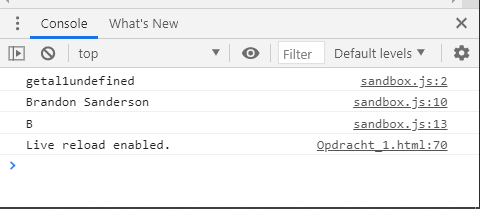

Javascript introductie
Wat is javascript?
Javascript is een script die op je computer loopt, daarom wordt het client side
language genoemd. Javascipt moet men niet gebruiken
als een "enhancer voor
audiance experience". Daar bedoel ik mee dat men niet op Javascript moet
leunen als een functionaliteit op de website.
Dit komt omdat de "user" de de functie "Javascript" moet inschakelen om het te kunnen
te kunnen gebruiken.
Dit leidt tot fouten in sommige webbrowsers, daarom is het niet slim om Javascript te gebruiken om de functionaliteit van je website totaal te beheersen.
Belangrijk om te weten over Javascript!
Javascript loopt zijn script af van top tot bottom.
Javascript is een "zero" based language, dat wil zeggen dat het van 0 telt.
Voorbeeld:
//string concatenation
let firstName = 'Brandon';
let lastName = 'Sanderson';
let fullName = firstName + ' ' + lastName;
console.log(fullName);
//getting characters
console.log(fullName[0]);
Console.log(fullName[0];) ziet er dat zo uit in je console:

Zero is in dit geval de letter B in de naam "Brandon".
Opdracht 1
Datatypes
Opdrachten over undefined en getallen aan variable toekennen.
Opdracht 1:
1. Maak een variable aan met let en noem het “getal1”.
2. Ken geen waarde toe aan de variable.
3. Print vervolgens de variable met console.log(“getal1 ” + getal1);.
Open dit html bestand in jouw browser en kijk in je console. Wat zie je dan?
Antwoord:
let getal1;
console.log("getal1" + getal1);
Het ziet we de variable, maar omdat wij de de variable getal1 geen waarde heb gegeven, geeft de webbrowser automatisch de waarde "undefined" aan.
Opdracht 2.1
Opdracht 2.1:
1. Maak een variable aan met const en noem het getal2.
2. Ken geen waarde toe aan de variable.
3. Print vervolgens de variable met console.log(“getal2 ” + getal2);.
Antwoord:
let getal2;
console.log("getal2" + getal2);
Het ziet we de variable, maar omdat wij de de variable getal1 geen waarde heb gegeven, geeft de webbrowser automatisch de waarde "undefined" aan.

Opdracht 2.2
Open dit html bestand in jouw browser en kijk in je console. Wat zie je dan?
4. Maak een variable aan met const en noem het getal2.
5. Ken een Number toe aan de variable.
6. Print vervolgens de variable met console.log(“getal2 ” + getal2);.
Antwoord:
//opdracht 2.2
let getal2 = 2;
console.log("getal2" + getal2);
De webbrowser heeft nu een waarde toegevoegd, omdat wij het in hebben gevuld als een "Number" 2. Er staat nu "getal22".

Opdracht 3
Opdracht 3:
1. Maak een let variable en noem het getal3. Ken gelijk een Number 3 aan toe. Hoe
programmeer je dat ?
2. Print vervolgens de variable met console.log(“getal3 ” + getal3);.
Open dit html bestand in jouw browser en kijk in je console. Je zult “getal3 3” in console zien.
Antwoord:
//opdracht 3
let getal3 = 3;
console.log("getal" + getal3);
 De webbrowser heeft nu een waarde toegevoegd, omdat wij het in hebben gevuld als een "Number" 3. Er staat nu "getal22".
De webbrowser heeft nu een waarde toegevoegd, omdat wij het in hebben gevuld als een "Number" 3. Er staat nu "getal22".
Opdracht 4
Opdracht 4:
1. Hergebruik de variable "getal3 en wijzig de waarde van de variable getal3 naar 5.
2. Print vervolgens de variable met console.log(“getal3 ” + getal3);
Open dit html bestand in jouw browser en kijk in je console. Je zult “getal3 5” in console zien

Opdracht 5
Opdracht 5:
1. Maak een let variable en noem het datatype.
2. Ken de waarde true aan de variable.
3. Print vervolgens de variable met console.log(“datatype ” + typeof datatype);
Open dit html bestand in jouw browser en kijk in je console. Je zult “datatype boolean” in
console zien.
4. Wat voor type is de waarde false?
Antwoord:
//opdracht 5
let datatype = 'true';
console.log("datatype" + typeof datatype);
De browser print het uit als: datatypestring.

Opdracht 6
Opdracht 6:
a. Herhaal opdracht 5 en geef antwoord op de volgende vragen.
Hoe herken je dat een waarde String is? Geef ook een voorbeeld.
b. Hoe herken je dat een waarde Number is? Geef ook een voorbeeld.
c. Hoe herken je dat een waarde BigInt is? Geef ook een voorbeeld.
d. Hoe herken je dat een waarde Symbol is? Geef ook een voorbeeld.
Antwoord 6.a:
Een string herken je aan de aanhallingstekens. Een dubble quote or a singular quote.
Antwoord 6.b:
1. De waarde "Number" kan je herkennen aan de waarde als getallen.
voorbeeld:
let getal = 2;
console.log("getal2" + getal2);

Antwoord 6.c:
BigInt is een speciaal numeriek type dat ondersteuning biedt voor gehele getallen met een willekeurige lengte.
Een bigint wordt gemaakt door n toe te voegen aan het einde van een integer literal of door de functie BigInt aan te roepen die bigints maakt van strings, getallen enz.
voorbeeld:
alert(1n + 2n); // 3
alert(5n / 2n); // 2
Wat doet het:
De code 1 telt de cijfers bij elkaar op.
De code 2 deelt de cijfers met elkaar. Er hoort 2.5 te staan, maar het rond het af naar nul (zonder de decinmale deel).


Antwoord 6.d:
Symbols is een nieuwe toevoeging aan de Javascript taal. ze zijn nauw verbonden met objecten.
"By specification, object property keys may be either of string type, or of symbol type. Not numbers, not booleans, only strings or symbols, these two types."
link.
//opdracht 6.d
Voorbeeld:
let id1 = Symbol("id");
let id2 = Symbol("id");
alert(id1 == id2); // false

Opdrachten wat je met Numbers kan doen.
Opdracht 7
Opdracht 7:
1. Maak twee variables aan met twee verschillende Numbers. Geeft de variables een
logische naam waaraan je kunt afleiden wat het inhoudt.
2. Eerste variable heeft de waarde 6.
3. Tweede variable heeft de waarde 8.
Tel de twee waardes bij elkaar op. Print het antwoord in jouw browser console. Het
antwoordt zal 14 moeten zijn.
Trek de tweede waarde af van de eerste waarde. Print het antwoord in jouw browser
console. Het antwoordt zal 2 moeten zijn.
Vermenigvuldig de twee waardes. Print het antwoord in jouw browser console. Het
antwoordt zal 48 moeten zijn.
Deel de twee waarde met de eerste waarde. Print het antwoord in jouw browser console. Het
antwoordt zal 1.33 moeten zijn.
Antwoord:
//opddracht 7
let getal6 = 6;
let getal8 = 8;
console.log(getal6 + getal8);
console.log(getal8 - getal6);
console.log(getal6 * getal8);
console.log(getal8 / getal6);

Opdracht 8
Opdracht 8:
1. Wat is het antwoord van de volgende som: 3 + 5 * 10 / 2?
2. Print het antwoord in jouw browser console.
Open dit html bestand in jouw browser en kijk in je console.
Antwoord:
1. Met een calculator: 3 + 5 *10 / 2 = 40
2. Wiskunde format:
1. Altijd eerst of vermenigvuldig sommen of delingen.
2. Daarna pas de plus en min sommen.
5 * 10 / 2 (+3) = 27.
De vraag is wat is juist?
Javascript zal het wiskundig optellen.
//opdracht 8
let som = 27;
console.log(som);
Opdracht 9
Opdracht 9:
Voor deze opdracht is het handig om je in te lezen over increment en decrement.
1. Copy de volgende code in jouw VSCode:
let number = 3;
number++;
2. Print uitkomst in jouw browser console.
Wat gebeurt er met de uitkomst?
3. Wijzig number++ naar number--.
4. Wat is de uitkomst van de som ?
Wat gebeurt is de uitkomst?
5. Copy de volgende code in jouw VSCode:
let number = 3;
const sum = number++ + 2;
console.log(sum);
6. Wat is de uitkomst van van de som ?
Leg jouw antwoord uit.
7. Copy de volgende code in jouw VSCode:
let number = 3;
const sum = ++number + 2;
console.log(sum);
8. Wat is de uitkomst van van de som ?
Antwoord 9.1:
//opdracht 9
let number = 3;
number++;
console.log(number++);
Wordt 4.
 Antwoord 9.2:
let number = 3;
number--;
console.log(number--);
Wordt 2.
Antwoord 9.2:
let number = 3;
number--;
console.log(number--);
Wordt 2.
 Antwoord 9.3:
let number = 3;
const sum = number++ + 2;
console.log(sum);
Wordt 5.
Antwoord 9.3:
let number = 3;
const sum = number++ + 2;
console.log(sum);
Wordt 5.
 Opdracht 9.4
let number = 3;
const sum = ++number + 2;
console.log(sum);
Wordt 6.
Opdracht 9.4
let number = 3;
const sum = ++number + 2;
console.log(sum);
Wordt 6.

Opdracht 10
Opdracht 10:
1. Copy de volgende code in jouw VSCode:
let number = 3;
number += 4;
console.log(number);
2. Wat is de uitkomst van van de som ?
Het wordt 7.
3. Hoe zou je het anders kunnen schrijven en dezelfde uitkomst hebben ?
Geef een antwoord, geschreven code en uitleg.